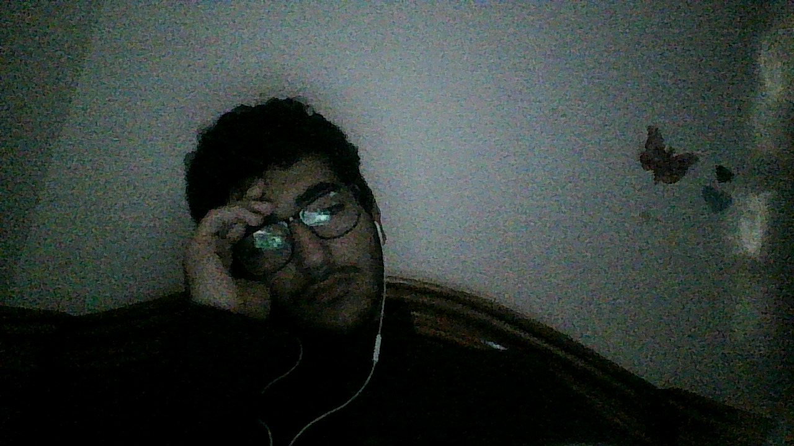

It’s been a while. Not because I had nothing to say quite the opposite. A lot happened. Too much, actually. The kind of too much that makes documenting it feel like work, and that type of work is exactly what I avoided in purpose. Call it laziness, call it resistance. I call it knowing that once I start writing, I won’t be able to lie to myself anymore.
So this post isn’t an update. It’s not a lesson. It’s not a redemption arc.
It’s just me taking space. No structure, no moral at the end. Just thoughts spilling because keeping them contained has started to cost more than letting them out.
Let’s start with the loudest thing.
I don’t know who I am anymore.
Not in the poetic coming-of-age way. In the unsettling way—like standing in front of a mirror that responds a second too late. The emptiness is back. Not dramatic sadness, not depression (maybe). Just a blunt, dry sense of meaninglessness. The kind that asks ugly questions and doesn’t care if they’re appropriate.
Why is any of this happening?
Why do we suffer?
Why does effort feel mandatory while meaning feels optional?
Why does being alive come with expectations I never agreed to?
I didn’t choose to be here. And if I’m being brutally honest—if choice had been involved, I wouldn’t have opted in. Not out of despair, but out of logic. The cost-benefit analysis is absurd. So much energy burned just to maintain existence, with no guarantee of fulfillment, no refund policy, and no clear objective. That’s not a challenge; that’s bad architecture.
I hate being stuck inside the consequences of choices made by someone I barely recognize. That guy—he made decisions with limited data, weaker boundaries, different values. I’m not him anymore. Yet I’m the one paying the bill.
That’s the trap:
I don’t identify with the person who made the choices, but I fully inherit the aftermath, and that feels unfair in a way I don’t know how to resolve.
Why should any of this matter if I didn’t consent to being here in the first place?
Lately, it feels like I live in a constant, low-grade existential pain. Not explosive. Erosive. Like something quietly scraping away at my sense of self. My identity isn’t shattered—it’s thinning. I’m here, but slightly misaligned. Like I’m playing a role I’ve already emotionally outgrown.
To be clear—I’m not saying “I want to die.”
That’s not the thought.
The thought is: I resent being forced to carry a life that feels like suffering without payoff.
No renegotiation. Just it is what it is
The strangest part? I’ve changed faster than my circumstances can respond. Internally, I’ve already moved on. Externally, I’m stuck dealing with echoes. So it feels like I’m serving time for someone I no longer agree with. Same body, same name, different operating system.
That gap—that lag—is where the anger lives. Not sadness. Not fear. Anger. Controlled, compressed, but present. Because this doesn’t feel like growth right now. It feels like punishment.
No resolution here. No lesson learned. Just some random thoughts in my head writing them in bed before falling asleep at 6 am only to wake up at 9 am and start my day.
Just honesty, for once.
If you’re still reading, thanks for standing in the noise with me.
More soon—or not. Depends on whether reality decides to catch up.

Finished at Thu, Jan 01.2026